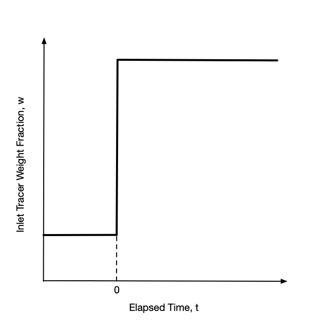
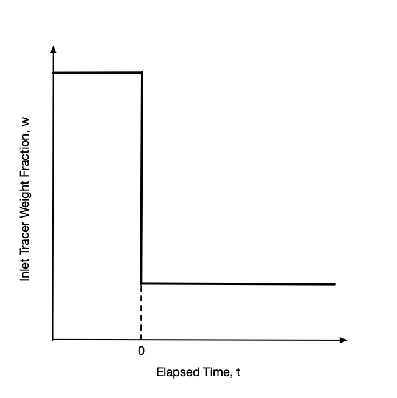
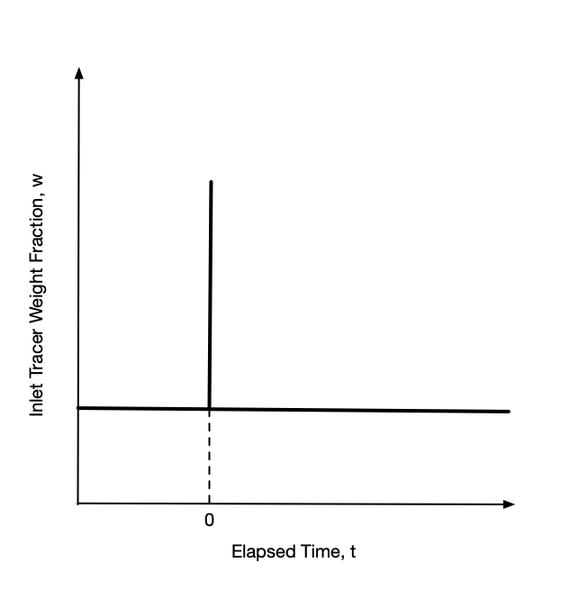
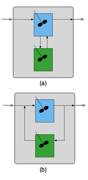
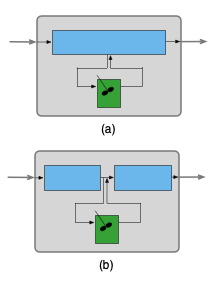
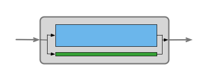

13 Empirical Non-Ideal Reactor Models
This chapter is from a previous version of Reaction Engineering Basics. It will be revised as soon as possible.
13.1 The Age Distribution Functions
In the ideal reactors, fluid flow is either perfectly mixed or plug flow. In non-ideal reactors the flow may not be so well-defined. The cumulative age distribution function provides one means of characterizing fluid flow in a reactor. In addition, it, or the related differential age distribution function, can be useful when it is necessary to generate a model for a non-ideal reactor.
13.1.1 The Cumulative and Instantaneous Age Distribution Functions
It is useful to define a hypothetical “fluid element” before considering the age distribution functions. A fluid element is a very small volume of fluid within the total reactor flow. A fluid element is perfectly mixed internally, but it does not mix with any other fluid elements in the reactor. Again, a fluid element is a hypothetical construct, and not something real.
The age of a fluid element, \(\lambda\), is the length of time it stays in the reactor. That is, the age of a fluid element is another name for its residence time. The key point is that one fluid element leaving a reactor can have a different age than another fluid element that is also leaving the reactor.
The cumulative age distribution function, \(F\left(\lambda\right)\), is defined in terms of the fluid leaving a reactor. Specifically, \(F\left(\lambda\right)\) is the fraction of the fluid leaving the reactor that has an age less than or equal to \(\lambda\). Consequently, \(F\left(0\right)\) is equal to zero because fluid can’t leave the reactor if it was never in the reactor (i. e. if it has an age of zero). Assuming that all fluid elements leave the reactor eventually, \(F\left(\infty\right)\) is equal to 1.
The differential age distribution function, \(dF\), is found by taking the derivative of the cumulative age distribution function and multiplying it by a differential change in the age, as shown in Equation 13.1. At any value of the age, \(\lambda\), it represents the fraction of fluid leaving the reactor that has an age between \(\lambda\) and \(\lambda + d\lambda\), where \(d\lambda\) is a differentially small increment in age. By definition then, the sum of the differential changes in the fraction of fluid with ages between 0 and \(\lambda\) must equal the cumulative fraction of the fluid with age \(\lambda\) as shown in Equation 13.2. All of the fluid elements leaving the reactor must have and age between zero an infinity, leading to Equation 13.3.
\[ dF\left(\lambda\right) = \frac{dF}{d\lambda}d\lambda \tag{13.1}\]
\[ F\left(\lambda\right) = \int_0^\lambda dF\left(t\right) \tag{13.2}\]
\[ \int_0^\infty \frac{dF}{d\lambda}d\lambda = 1 \tag{13.3}\]
(In some reaction engineering books, \(F\) is referred to as the age function, and \(dF\) is called the age distribution function. Calling \(F\) the age function can be confusing for new learners because \(F\) actually represents a fraction of the fluid that depends upon age, and not age itself. For this reason, in Reaction Engineering Basics, \(F\) is called the cumulative age distribution function and \(dF\) is called the differential age distribution function.)
The cumulative age distribution function represents a useful means of characterizing the flow in a reactor, and the differential age distribution function can be used to model a reactor where the flow is non-ideal. Before they can be used, it is necessary to be able to measure the cumulative age distribution function for an actual reactor and to calculate it from the model for a reactor. Doing so is the focus of the rest of this chapter.
13.1.2 Measuring a Reactor’s Cumulative Age Distribution Function
A chemical species called a tracer is used to measure the cumulative age distribution function for a reactor. A tracer mixes intimately with the other fluid in the reactor, and its mass fraction or mass concentration can be easily determined from a sample of the reactor fluid. Examples of tracers include dyes and small amounts of a radioactive species that can be added easily to the fluid entering a reactor.
13.1.2.1 Stimulus and Response
Measuring the cumulative age distribution function of an actual reactor begins by changing the mass concentration of tracer in the reactor inlet. This is referred to as applying a stimulus at the reactor inlet. In reaction engineering, step changes and impulses are the most common stimuli. Before applying the stimulus the mass concentration of tracer at the reactor inlet should be constant for sufficient time to allow the tracer concentration throughout the reactor to reach steady-state. The concentration of tracer in the feed prior to applying the tracer may equal zero, but this is not required. All that is required is that the tracer flow is at steady-state. Here, the instant the stimulus is applied will be defined as \(t=0\). The stimuli are applied instantaneously, so \(t\) represents the elapsed time since the stimulus was applied.
The whole purpose of applying a stimulus is to characterize the flow in the reactor. As such, it is essential that the stimulus be applied in a way that does not affect the volumetric flow within the reactor. This can be accomplished by first making sure that the volume of tracer being added is negligibly small compared to the total flow entering the reactor. Additionally, the added tracer temperature must be the same as the feed it is being added to. When these precautions are taken, the feed concentrations (or partial pressures) of all reagents and the feed temperature will be identical to those prior to applying the stimulus. Since the inlet reagent concentrations and temperature are the same, the concentration and temperature profiles within the reactor will also be the same.
With the tracer flow at steady-state, a step change stimulus is applied by instantaneously increasing or decreasing the inlet mass concentration of tracer to a new value and holding it constant at that value. A plot of the inlet tracer concentration vs. time will then look like a stair step as viewed from the side, hence the name step change. The step may be upward or downward as indicated in Figure 13.1. After the change, the inlet mass concentration of tracer is held constant at the new value until the system attains a new steady state.


Again, with the tracer flow at steady-state, an impulse stimulus is applied by instantaneously injecting a fixed mass of tracer into the feed all at once. The inlet mass concentration before and after the injection are the same. Most often they are equal to zero, but again that is not a requirement. A plot of the inlet tracer concentration vs. time will look like a flat line with a spike at the injection time as shown in Figure 13.2. Ideally the width of the spike (duration of the injection) is effectively zero.

Starting from the time the stimulus is applied at the reactor inlet, the mass concentration of tracer in the reactor outlet is measured as a function of time. The variation in the mass concentration of tracer at the reactor outlet over time is called the response. Importantly, the stimulus is applied at the reactor inlet and the response is measured at the reactor outlet. It is equally important that the response is measured for a period of time that is long enough for the outlet mass concentration of tracer to reach steady-state.
13.1.2.2 Response to an Impulse Stimulus
During the measurement of the cumulative age distribution function, the total mass flow rate through the reactor is constant. The concentration of tracer within the reactor must be at steady-state when the stimulus is applied. Consequently, prior to applying the impulse stimulus, the inlet and outlet mass fractions of tracer are constant and equal with a value that can be represented as \(w_{in}\big\vert_{t<0}\). That amount of tracer is always flowing through the reactor, both before and after the stimulus. After the stimulus has been applied at \(t=0\), any tracer in the output steam in excess of \(w_{in}\big\vert_{t<0}\) (Figure 13.2) must have come from the tracer added in the impulse.
If \(\dot{m}_{total}\) is the total mass flow rate through the reactor and \(w_{out}\) is the instantaneous mass fraction of tracer leaving the reactor, then \(\dot{m}_{total} \left(w_{out} - w_{in}\big\vert_{t<0}\right)\) is the instantaneous outlet mass flow rate of tracer added in the impulse. Integrating that instantaneous mass flow rate over time from the instant the impulse was applied, defined here to equal zero, to a time, \(\lambda\), then gives the cumulative mass of tracer that was added in the impulse and that remained in the reactor for a time less than or equal to \(\lambda\). Dividing that cumulative mass of tracer that has emerged by the total mass injected in the implulse, \(m_{impulse}\), gives the fraction of the tracer injected in the impulse that remained in the reactor for a time less than or equal to \(\lambda\). That is, it gives the value of the cumulative age distribution function for an age of \(\lambda\), Equation 13.4. Since the instant the impulse was applied is defined as time zero, \(\lambda\) in Equation 13.4 is the elapsed time since the application of the impulse.
\[ F\left(\lambda\right) = \frac{\dot{m}_{total}\int_{0}^\lambda \left(w_{out} - w_{in}\big\vert_{t<0}\right)dt}{m_{impulse}} \tag{13.4}\]
Technically this measures the cumulative age distribution function for the tracer that was added in the impulse. However, because the tracer mixes intimately with the other fluid, its cumulative age distribution function is the same as the rest of the fluid.
Assuming that all of the tracer that was added in the impulse eventually leaves the reactor yields Equation 13.5. If for some reason an engineer had data for the response to an impulse stimulus, but did not know the amount of tracer in the impulse, this equation could be used to calculate the denominator in Equation 13.4, provided that the response was measured over a sufficiently long period following the stimulus for the tracer concentration to reach steady-state.
\[ m_{impulse} = \dot{m}_{total}\int_{0}^\infty \left(w_{out} - w_{in}\big\vert_{t<0}\right)dt \tag{13.5}\]
The process described here for measuring the cumulative age distribution function will yield a set of \(\underline{w}_{out}\) vs. \(\underline{\lambda}\) data where \(\underline{\lambda}\) is the set of elapsed times at which the outlet tracer mass fraction, \(w_{out}\), was measured. For each data point in that set, the integral in Equation 13.4 must be evaluated. One way to evaluate the integral is to use the trapezoid rule. Doing so for each data point, \(i\), will yield the corresponding value of \(F\left(\lambda_i\right)\). In other words, the process described here does not yield the cumulative age distribution as an analytical function, but as a table of values of \(F\left(\lambda\right)\) vs. \(\lambda\). This is illustrated in Examples ?sec-example_22_5_1 and ?sec-example_22_5_2.
Equations 13.4 and 13.5 are written in terms of the total mass flow rate and inlet and outlet mass fractions. This is convenient because at steady-state, the total mass flow rate is constant. However, the cumulative age distribution function can also be generated by measuring the mass or molar concentration of the tracer. Equations 13.4 and 13.5 can be converted to use mass or molar concentrations using the relationships from ?sec-1_comp_reacting_systems.
13.1.2.3 Response to a Step Change Stimulus
As for the impulse stimulus, the mass flow through the reactor must be constant during the measurement of the cumulative age distribution function, and the concentration of tracer within the reactor must be at steady-state when the stimulus is applied. Consider the application of a step-change stimulus, Figure 13.1 (a) or (b).
Fluid elements entering (and leaving) the reactor prior to the application of the step change at \(t=0\) have a tracer mass fraction of \(w_{in}\big\vert_{t<0}\). After the step change, fluid elements entering the reactor have a tracer mass fraction of \(w_{in}\big\vert_{t>0}\). Fluid leaving the reactor at an elapsed time, \(\lambda\), after the step change will be a mixture of two kinds of fluid elements.
One kind of fluid element is one that has been in the reactor for a period of time greater than \(\lambda\). Since these fluid elements entered before the step change, their tracer weight fraction is \(w_{in}\big\vert_{t<0}\). They can be considered “old” fluid elements.
The other kind of fluid element is one that has been in the reactor for a period of time less than or equal to \(\lambda\). This kind of fluid element can be considered to be a “young” fluid element, and since they entered after the step change, their tracer weight fraction is \(w_{in}\big\vert_{t>0}\).
Suppose that a sample of mass, \(m\), is taken from the reactor outlet at an elapsed time of \(\lambda\). Then by the definition of \(F\left(\lambda\right)\), \(mF\left(\lambda\right)\) is the mass of “young” fluid in the sample, and \(m\left(1-F\left(\lambda\right)\right)\) is the mass of “old” fluid in the sample. The total mass of tracer in the sample, \(m w_{out}\big\vert_{t=\lambda}\), must equal the mass of tracer in the “young” fluid in the sample plus the mass of tracer in the “old” fluid in the sample.
\[ m w_{out}\big\vert_{t=\lambda} = m_{young}w_{young} + m_{old}w_{old} \]
Expressing the masses of “young” and “old” fluid in terms of the cumulative age distribution function and substituting the tracer mass fractions of the “young” and “old” fluid yields Equation 13.6. Solving Equation 13.6 for \(F\left(\lambda\right)\) then yields an expression for calculating \(F\left(\lambda\right)\) from the response to a step-change stimulus, Equation 13.7.
\[ m w_{out}\big\vert_{t=\lambda} = mF\left(\lambda\right)w_{in}\big\vert_{t>0} + m\left(1-F\left(\lambda\right)\right)w_{in}\big\vert_{t<0} \tag{13.6}\]
\[ F\left(\lambda\right) = \frac{w_{out}\big\vert_{t=\lambda} - w_{in}\big\vert_{t<0}}{w_{in}\big\vert_{t>0} - w_{in}\big\vert_{t<0}} \tag{13.7}\]
As is the case when calculating the cumulative age distribution function from the response to an impulse, the procedure described here for analysis of the response to a step-change will not yield an analytical function, but instead, a table of values of \(F\left(\lambda\right)\) vs. \(\lambda\).
13.1.3 Generating the Cumulative Age Distribution Function from a Reactor Model
Sometimes, instead of needing the cumulative age distribution function for an actual reactor, an engineer will need the cumulative age distribution function that corresponds to a reactor model. To generate it, the model is used to simulate the response to a step-change or impulse stimulus. This generates simulated \(\underline{w}_{out}\) vs. \(\underline{\lambda}\) data. Depending on whether the response to an impulse or a step-change was simulated, either Equation 13.4 or Equation 13.7 can be used to generate the cumulative age distribution function.
One point to note is that the reactor design equations are usually written as mole balances, but Equations 13.4 and 13.7 are written in terms of mass fractions. Using the molecular weight of the the tracer, it is easy to interconvert between moles and mass.
Additionally it can be noted that if the reactor design equations can be solved analytically, as shown below for an ideal CSTR, an analytical cumulative age distribution function can be generated. If the reactor design equations must be solved numerically, the corresponding cumulative age distribution function will take the form of a table of \(\underline{F}\left(\lambda\right)\) vs. \(\underline{\lambda}\).
13.1.3.1 Cumulative Age Distribution Function for an Ideal CSTR
Suppose a step-change stimulus is applied as described above to an ideal CSTR. The general form of a mole balance on the tracer is given in ?eq-cstr_mol_balance. The volumetric flow rate is not affected by the stimulus, so the fluid volume and volumetric flow rate are constant, and their time-derivatives are zero. The tracer is not a reactant or a product, so its stoichiometric coefficient in all reactions is zero. Letting \(\overline{t} = \frac{V}{\dot{V}}\), the mole balance on the tracer simplifies as shown in Equation 13.8.
\[ \frac{V}{\dot{V}}\frac{d \dot{n}_i}{dt} + \frac{\dot{n}_i}{\dot{V}}\cancelto{0}{\frac{dV}{dt}} - \frac{\dot{n}_iV}{\dot{V}^2}\cancelto{0}{\frac{d \dot{V}}{dt}} = \dot{n}_{i,in} - \dot{n}_i + V \sum_j \cancelto{0}{\nu_{i,j}}r_j \]
\[ \frac{d \dot{n}_{out}}{dt} = \frac{\dot{n}_{in}\big\vert_{t>0} - \dot{n}_{out}}{\overline{t}} \tag{13.8}\]
Before the application of the stimulus, the reactor was at steady-state with a tracer flow rate of \(\dot{n}_{in}\big\vert_{t<0}\), so at the instant the stimulus is applied, \(t=0\), that is the outlet molar flow rate of tracer. This provides the initial value needed to solve the mole balance. Doing so yields Equation 13.9.
\[ \dot{n}_{out} = \dot{n}_{in}\big\vert_{t>0} - \left( \dot{n}_{in}\big\vert_{t>0} - \dot{n}_{in}\big\vert_{t<0}\right)\exp{\left(-\frac{t}{\overline{t}}\right)} \tag{13.9}\]
Start from Equation 13.8 and separate variables and integrate from the initial values to an arbitrary time and outlet molar flow.
\[ \int_{\dot{n}_{in}\big\vert_{t<0}}^{\dot{n}_{out}}\frac{d \dot{n}_{out}}{\dot{n}_{in}\big\vert_{t>0} - \dot{n}_{out}} = \int_0^t\frac{dt}{\overline{t}} \]
Evaluate the integral.
\[ -\ln{\left(\dot{n}_{in}\big\vert_{t>0} - \dot{n}_{out}\right)}\Bigg\vert_{\dot{n}_{in}\big\vert_{t<0}}^{\dot{n}_{out}} = \frac{t}{\overline{t}}\Bigg\vert_0^t \]
\[ -\ln{\frac{\dot{n}_{in}\big\vert_{t>0} - \dot{n}_{out}}{\dot{n}_{in}\big\vert_{t>0} - \dot{n}_{in}\big\vert_{t<0}}} = \frac{t}{\overline{t}} \]
Multiply both sides by -1 and exponentiate.
\[ \frac{\dot{n}_{in}\big\vert_{t>0} - \dot{n}_{out}}{\dot{n}_{in}\big\vert_{t>0} - \dot{n}_{in}\big\vert_{t<0}} = \exp{\left(-\frac{t}{\overline{t}}\right)} \]
Solve for \(\dot{n}_{out}\).
\[ \dot{n}_{out} = \dot{n}_{in}\big\vert_{t>0} - \left( \dot{n}_{in}\big\vert_{t>0} - \dot{n}_{in}\big\vert_{t<0}\right)\exp{\left(-\frac{t}{\overline{t}}\right)} \]
Equation 13.7 can then be used to generate the cumulative age distribution function for an ideal CSTR. First the mass fractions can be set equal to the tracer mass flow divided by the total mass flow. The total mass flow will cancel out. The numerator and denominator can then be multiplied by the molecular weight of the tracer to convert the mass flow rates to molar flow rates. Finally, Equation 13.9 can be substituted, and the resulting equation can be rearranged to obtain Equation 13.10, the cumulative age distribution function for an ideal CSTR.
\[ F_{CSTR}\left(\lambda\right) = 1 - \exp{\left(-\frac{\lambda}{\overline{t}}\right)} \tag{13.10}\]
Start with Equation 13.7.
\[ F\left(\lambda\right) = \frac{w_{out}\big\vert_{t=\lambda} - w_{in}\big\vert_{t<0}}{w_{in}\big\vert_{t>0} - w_{in}\big\vert_{t<0}} \]
Express the mass fractions in terms of the mass flow of tracer, \(\dot{m}\), and total mass flow, \(\dot{m}_{tot}\).
\[ F\left(\lambda\right) = \frac{\frac{\dot{m}_{out}}{\dot{m}_{total}}\big\vert_{t=\lambda} - \frac{\dot{m}_{in}}{\dot{m}_{total}}\big\vert_{t<0}}{\frac{\dot{m}_{in}}{\dot{m}_{total}}\big\vert_{t>0} - \frac{\dot{m}_{in}}{\dot{m}_{total}}\big\vert_{t<0}} \]
Cancel out the total mass flow rate, and multiply the numerator and denominator by the inverse of the molecular weight of the tracer, \(M\).
\[ F\left(\lambda\right) = \frac{\frac{\dot{m}_{out}}{M}\big\vert_{t=\lambda} - \frac{\dot{m}_{in}}{M}\big\vert_{t<0}}{\frac{\dot{m}_{in}}{M}\big\vert_{t>0} - \frac{\dot{m}_{in}}{M}\big\vert_{t<0}} \]
Replace the mass flow rate divided by the molecular weight with the molar flow rate of tracer.
\[ F\left(\lambda\right) = \frac{\dot{n}_{out}\big\vert_{t=\lambda} - \dot{n}_{in}\big\vert_{t<0}}{\dot{n}_{in}\big\vert_{t>0} - \dot{n}_{in}\big\vert_{t<0}} \]
Substitute Equation 13.9, evaluated at \(t=\lambda\), for \(\dot{n}\big\vert_{t=\lambda}\).
\[ F\left(\lambda\right) = \frac{\dot{n}_{in}\big\vert_{t>0} - \left( \dot{n}_{in}\big\vert_{t>0} - \dot{n}_{in}\big\vert_{t<0}\right)\exp{\left(-\frac{t}{\overline{t}}\right)} - \dot{n}_{in}\big\vert_{t<0}}{\dot{n}_{in}\big\vert_{t>0} - \dot{n}_{in}\big\vert_{t<0}} \]
Combine the first and last terms in the numerator.
\[ F\left(\lambda\right) = \frac{\left(\dot{n}_{in}\big\vert_{t>0} - \dot{n}_{in}\big\vert_{t<0}\right) - \left( \dot{n}_{in}\big\vert_{t>0} - \dot{n}_{in}\big\vert_{t<0}\right)\exp{\left(-\frac{t}{\overline{t}}\right)}}{\dot{n}_{in}\big\vert_{t>0} - \dot{n}_{in}\big\vert_{t<0}} \]
Finally divide both the numerator and denominator by \(\left(\dot{n}_{in}\big\vert_{t>0} - \dot{n}_{in}\big\vert_{t<0}\right)\).
\[ F\left(\lambda\right) = 1 - \exp{\left(-\frac{\lambda}{\overline{t}}\right)} \]
13.1.3.2 Cumulative Age Distribution Function for an Ideal PFR
The cumulative age distribution function for an ideal PFR could be generated in the same manner as that used to generate the expression for an ideal CSTR. However, due to the plug flow in the reactor, it is easier and faster to simply deduce the cumulative age distribution function by considering the response to an impulse stimulus.
Ideally the impulse is injected as a differentially thick slug of fluid at the reactor inlet. Due to plug flow, the slug never mixes with any of the fluid ahead of it nor any of the fluid behind it. The slug mass moves from the inlet to the outlet at the total mass flow rate. The instantaneous volumetric flow rate of the slug is equal to the mass flow rate divided by the fluid density, \(\rho_{fluid}\). Dividing the instantaneous volumetric flow rate by the cross-sectional area of the tube then yields the instantaneous linear velocity of the slug, Equation 13.11. The length of the PFR is simply its volume divided by the cross-sectional area, Equation 13.12.
\[ v = \frac{\dot{m}_{total}}{A\rho_{fluid}} \tag{13.11}\]
\[ L = \frac{V_{PFR}}{A} \tag{13.12}\]
For liquids, the density can be assumed to be constant. For gases, if the reactions taking place cause a change in the total molar flow rate, the temperature, or the pressure, the volumetric flow rate, and hence the density, will vary along the length of the reactor. In that case, the linear velocity will also vary along the reactor length, as can be seen from Equation 13.11.
By definition, the linear velocity is the derivative of the axial position with respect to time. Defining \(z=0\) as the reactor inlet and \(z=L\) as the reactor outlet, and noting that the density might change due to gas expansion or contraction, the time required for the slug to reach the outlet, \(\overline{t}\), can be calculated, Equation 13.13. If the density is constant, or if the change in density is ignored, Equation 13.14 results.
\[ \overline{t} = A\int_0^L\frac{dz}{\dot{V}} \tag{13.13}\]
\[ \overline{t} = \frac{V_{PFR}}{\dot{V}} \tag{13.14}\]
Start with the definition of linear velocity.
\[ v = \frac{dz}{dt} \]
Substitute the linear velocity of the slug of tracer.
\[ \frac{\dot{m}_{total}}{A\rho_{fluid}} = \frac{dz}{dt} \]
Separate the variables, noting that \(\frac{\dot{m}_{total}}{\rho_{fluid}} = \dot{V}\).
\[ dt = \frac{A\rho_{fluid}}{\dot{m}_{total}}dz \qquad \Rightarrow \qquad dt = \frac{A}{\dot{V}}dz \]
Integrate from the instant the stimulus is applied, \(t=0\), at the PFR inlet, \(z=0\), to the time, \(\overline{t}\), the slug reaches the PFR outlet, \(z=L\).
\[ \int_0^\overline{t}{dt} = \int_0^L\frac{A}{\dot{V}}dz \]
Evaluate the time integral. The cross-sectional area is a constant and can be taken outside of the spatial integral, but the volumetric flow rate may change due to a change in total moles, temperature, and/or pressure. In those cases the integral will need to be evaluated for the specific reactor under consideration.
\[ \overline{t} = A\int_0^L\frac{dz}{\dot{V}} \]
If the volumetric flow rate is constant, it can be taken outside the spatial integral, and that integral can be evaluated, too.
\[ \overline{t} = \frac{A}{\dot{V}}\int_0^Ldz = \frac{A\left(L-0\right)}{\dot{V}} = \frac{V_{PFR}}{\dot{V}} \]
So, at elapsed times less than \(\overline{t}\), no tracer will emerge from the reactor. Then, at \(t=\overline{t}\) all of the tracer will emerge at once. Thus, by definition, the cumulative age distribution function for an ideal PFR is given by Equation 13.15.
\[ \begin{matrix} F_{PFR}\left(\lambda\right) = 0, \, \lambda < \overline{t} \\ F_{PFR}\left(\lambda\right) = 1, \, \lambda \ge \overline{t} \end{matrix} \tag{13.15}\]
13.1.4 Assessing Reactor Ideality Using the Cumulative Age Distribution Function
The cumulative age distribution function can be used to partially test the ideality of a real reactor. To do so, \(F\left(\lambda\right)\), for the real reactor is measured as described above. \(\underline{F}\left(\lambda\right)\) vs. \(\underline{\lambda}\) and either \(F_{CSTR}\) or \(F_{PFR}\) are plotted on the same set of axes. If the plots do not superimpose, the real reactor cannot be modeled as an ideal CSTR or PFR.
If the plots of \(\underline{F}\left(\lambda\right)\) vs. \(\underline{\lambda}\) and either \(F_{CSTR}\) or \(F_{PFR}\) do superimpose, it does not mean the real reactor can be modeled as an ideal CSTR or PFR. The reason for this is that measuring the age function does not fully characterize the mixing within a reactor. It is possible for a reactor to appear to be very well-mixed at a macroscopic level while the mixing is quite poor at a microscopic level. In essence, the test being used here will give a favorable result as long as the time scale for mixing the fluid within the reactor is very small compared to the amount of time the fluid spends in the reactor. However, there is a third time scale that is important, namely the time scale for reaction to occur. If the chemical reaction is very fast compared to the time scale for mixing the fluid in the reactor, then, in a CSTR, for example, a significant amount of reaction will take place before the fluid is well-mixed. In this case, the reactor should not be modeled as an ideal CSTR because on the time scale that the reaction is taking place, it is not perfectly mixed, even though its cumulative age distribuion function matches what would be expected for an ideal CSTR.
Thus, the agreement of cumulative age distribuion functions of the real reactor and the ideal reactor model is a necessary, but not sufficient, criterion for ensuring the validity of modeling the real reactor as ideal. It is most likely to fail when studying very fast chemical reactions. Before generating kinetics data, the age function test nonetheless should be performed on the laboratory reactor, but one should not become complacent if the test is successful.
13.2 A Segregated Flow Reactor Model
?sec-7_age_function introduced the cumulative and differential age distribution functions. It showed how to measure the cumulative age distribution function, \(F\), and how it is related to the differential age distribution function, \(dF\). It also mentioned that the age distribution functions can be used to construct models for non-ideal reactors. This chapter describes one way to model a non-ideal flow reactor using its cumulative age distribution function. It is one variant of a group of segregated flow reactor (SFR) models. Only steady-state non-ideal reactors that operate at constant pressure and either adiabatically or isothermally are considered. This is not as limiting as it might first seem. Typically stirred tanks operate at constant pressure, and some tubular reactors operate with negligible pressure drop.
13.2.1 SFR Model Assumptions
The SFR model makes use of the concept of fluid elements that was first introduced in ?sec-7_age_function. The fluid entering the reactor is assumed to be segregated into many, many small volumes called fluid elements. Fluid elements aren’t real, observable things; they are hypothetical constructs. As such, the volume of a fluid element is not known, beyond that it is very small. However, because fluid elements are formed by splitting the non-ideal reactor feed into small parcels, the initial concentrations of the reagents and the initial temperature are known. They are equal to the concentrations and temperature of the feed to the non-ideal reactor.
The SFR model assumes that while the fluid elements are within the reactor, they remain perfectly mixed internally, but they do not mix with any other fluid elements. The mixing within fluid elements is sometimes called micro-mixing while mixing between different fluid elemnts is macro-mixing.
The SFR model makes three additional assumptions. The first is that the fluid elements have different residence times. They do not all spend the same amount of time within the reactor. The second additional assumption is that the residence times of the fluid elements are assigned according to the age distribution function for the non-ideal reactor. The final assumption is that the fluid elements become perfectly macro-mixed when they leave the reactor.
13.2.2 Fluid Elements as BSTRs
Each fluid element is a very small BSTR. It is perfectly mixed and no mass enters or leaves because it doesn’t mix with other fluid elements. By choosing the volume of a fluid element as a basis, the ideal BSTR reactor design equations can be solved to determine the composition, temperature, and pressure within a fluid element as a function of its residence time (age). As previously noted, in this chapter the pressure in the reactor is assumed to be constant.
If the non-ideal reactor being modeled operates isothermally and the reacting fluid is an incompressible, ideal liquid mixture, the only BSTR design equations that are needed to model a fluid element are the BSTR mole balances. If the reacting fluid is an ideal gas, a differential form of the ideal gas law may need to be added to the design equations to account for expansion or contraction. If the non-ideal reactor operates adiabatically, an energy balance on the reacting fluid will also be needed.
The analysis of a fluid element using the BSTR design equations is identical to the analysis of actual BSTRs as described in ?sec-4_bstr_analysis. The design equations will be IVODEs. Having chosen the fluid element volume as a basis, the initial molar amounts of the reagents can be calculated since the initial concentrations and temperature are known. Depending on the whether the reacting fluid is a liquid or a gas and whether the reactor is isothermal or adiabatic, the molar amounts of the reagents, the temperature, and the fluid volume may all change as a function of reaction time. The molar amounts and volume that are found by solving the BSTR design equations are extensive quantities, so they only apply for the chosen basis. However, if they are converted to intensive quantities, they can be used irrespective of the actual size of a fluid element. Hence the molar amounts and volume found by solving the BSTR design equations are typically used to calculate the concentrations of the reagents. Simlarly, if the reacting fluid volume changes as a function of reaction time or age, \(t_r\), it is converted to a relative volume, \(\gamma\), as shown in Equation 13.16.
\[ \gamma = \frac{V\big\vert_{t_r}}{V_{basis}} \tag{13.16}\]
To summarize, even though the volume of a fluid element is not known, the reagent concentrations in it, its temperature, and its relative volume can all be calculated as a function of reaction time, or equivalently, fluid age, by solving the ideal BSTR design equations.
13.2.3 The Segregated Flow Reactor Model
If \(\dot{V}_{in}\) is the volumetric flow rate into the non-ideal reactor, then \(\dot{V}_{in} dF\big\vert_{\lambda}\) is the inlet volumetric flow rate of fluid that will remain in the reactor for a reaction time between \(\lambda\) and \(\lambda + d\lambda\). The corresponding outlet volumetric flow rate of fluid that was in the reactor for a reaction time between \(\lambda\) and \(\lambda + d\lambda\) is then \(\dot{V}_{feed} \gamma \big\vert_{\lambda} dF\big\vert_{\lambda}\). The total outlet volumetric flow rate is then the sum of the flow rate for all possible reaction times or fluid ages. Since the fluid age intervals are differential, the sum takes the form of an integral, leading to Equation 13.17 for the total volumetric flow rate at the outlet from the non-ideal reactor. (The second form of the equations results from substituting Equation 13.1 into the first form.) Note that for an incompressible liquid, \(\gamma\) would be constant and equal to 1, and because \(\int_0^\infty dF = 1\) (see ?sec-7_age_function), \(\dot{V}_{out} = \dot{V}_{in}\), as expected.
\[ \dot{V}_{out} = \dot{V}_{in} \int_0^\infty \gamma dF = \dot{V}_{in} \int_0^\infty \gamma \frac{dF}{d\lambda} d\lambda \tag{13.17}\]
In a similar manner, the outlet molar flow rate of reagent \(i\) can be found by multiplying the outlet volumetric flow rate by the concentration of \(i\) as shown in Equation 13.18.
\[ \dot{n}_{i,out} = \dot{V}_{in} \int_0^\infty \gamma C_i dF = \dot{V}_{in} \int_0^\infty \gamma C_i \frac{dF}{d\lambda} d\lambda \tag{13.18}\]
If the non-ideal reactor operates isothermally, the outlet temperature is equal to the inlet temperature. However if the non-ideal reactor is adiabatic, the outlet temperature must be calculated. From above, the outlet molar flow rate of reagent \(i\) with an age between \(\lambda\) and \(\lambda + d\lambda\) is equal to \(\dot{V}_{in} \gamma \big\vert_{\lambda} C_i \big\vert_{\lambda} \frac{dF}{d\lambda}\bigg\vert_{\lambda} d\lambda\), and it will be at a temperature, \(T\big\vert_{\lambda}\). When the fluid elements macro-mix as they leave the reactor, each of these molar flows must gain or lose sensible heat to bring it to the final temperature, \(T_{out}\), of the fluid leaving the non-ideal reactor. If the macro-mixing is adiabatic, the sum of the sensible heats is equal to zero, Equation 13.19.
\[ \sum_i \dot{V}_{in} \int_0^\infty \gamma C_i \frac{dF}{d\lambda} \left(\int_T^{T_{out}} \hat{C}_{p,i}dT \right) d\lambda = 0 \tag{13.19}\]
In terms of molar heat capacities, this serves as implicit equation for \(T_{out}\) shown in Equation 13.20. For liquid systems, the volumetric heat capacity of the fluid is sometimes used, leading to the implicit equation for \(T_{out}\) shown in Equation 13.21.
\[ T_{out} : \, \dot{V}_{in} \int_0^\infty \gamma \frac{dF}{d\lambda} \left( \sum_i C_i \int_T^{T_{out}} \hat{C}_{p,i} dT \right)d\lambda = 0 \tag{13.20}\]
\[ T_f : \, \dot{V}_{in} \int_0^\infty \gamma \frac{dF}{d\lambda} \left(\int_T^{T_{out}} \breve{C}_pdT \right)d\lambda = 0 \tag{13.21}\]
13.2.4 Tabular Age Distribution Functions and Numerical Integration
The SFR model is based upon the cumulative age distribution function for the non-ideal reactor being modeled. When the cumulative age distribution function is available as an analytical function, evaluating \(F\) and \(\frac{dF}{d \lambda}\) at any value of \(\lambda\) is straightforward. Often, however, the cumulative age distribution function is measured using stimulus-response experiments (see ?sec-7_age_function). In that case, the cumulative age distribution function is typically available as a table with columns containing corresponding values of \(\lambda\) and \(F\).
In this chapter this form of the cumulative age distribution function will be referred to as a table. It should be mentioned that it could also be described as a pair of corresponding vectors. In that case, “adding a column” to the tabular form of the cumulative age distribution function is the same as creating an additional vector that corresponds to the original pair of vectors.
When using a tabular cumulative age distribution function that was generated experimentally, it is important to ensure that it spans a sufficiently large range of ages so that \(F\) ranges from zero to one. When using the SFR model, it is also necessary to add a third column to the table that contains the values of \(\frac{dF}{d\lambda}\) corresponding to each of the ages.
13.2.4.1 The Tabular Form of the Cumulative Age Distribution Function
By definition, \(F\left(0\right) = 0\), so the first row in the tabular form of the cumulative age distribution always should be \(\lambda\) = 0 and \(F\) = 0. Eventually all of the fluid leaves the reactor, so \(F\) should always equal 1 in the last row of the tabular age distribution. In principle, the age of the very last bit of fluid to leave could equal infinity, but since it is determined experimentally, the largest age in the tabular age function, \(\lambda_f\), will be finite.
That is, \(\lambda_f\) will equal the elapsed time when the last measurement in the stimulus-response experiments was made. Two situations are possible. In one situation, the value of \(F\) will have reached a value of 1 (within experimental error) by that time. By definition, \(F\) increases monotonically as \(\lambda\) increases, so once the maximum value of 1 has been reached, \(F\) will hold constant (to within experimental error) at that value for all later experimental measurements.
However, if the stimulus-response experiments were not continued for a sufficient length of time, the final value of \(F\) in the tabular form of the cumulative age distribution function will be less than 1. In order to use the SFR model, the cumulative age distribution function must range from \(F=0\) to \(F=1\). So if the final value of \(F\) is less than one, a row should be added to the end of the table. In the added row, \(F\) should equal 1, but the proper corresponding value of \(\lambda\) is unknown. One way to choose the value, \(\lambda_f\), to enter in that last row is to linearly extrapolate using the preceding two entries in the experimental cumulative age distribution table to find the value of \(\lambda\) where \(F\) equals 1, Equation 13.22.
\[ \lambda_f = \left(1 - F\big\vert_{\lambda_{f-2}}\right)\frac{\lambda_{f-1} - \lambda_{f-2}}{F\big\vert_{\lambda_{f-1}} - F\big\vert_{\lambda_{f-2}}} + \lambda_{f-2} \tag{13.22}\]
To summarize, the cumulative age distribution function will be a table with two columns. The first column should contain values of \(\lambda\), and the value in the first row of that column should be zero. The second column should contain corresponding values of \(F\). The value in the first row of the \(F\) column should be zero, and the value in the last row of the \(F\) column should equal 1 to within experimental uncertainty.
13.2.4.2 The Tabular Form of the Differential Age Distribution Function
The derivative of the age function, \(\frac{dF}{d\lambda}\), is needed when using the SFR model. A column representing \(\frac{dF}{d\lambda}\) can be added to the tabular form of the cumulative age distribution function quite easily. For example if forward differences are used to approximate the derivative, Equation 13.23 is used to calculate \(\frac{dF}{d\lambda}\) for all but the last row of the table. Since the age function has reached \(F=1\) in the last row and will remain constant at that value, the derivative in the last row is equal to zero, Equation 13.24
\[ \frac{dF}{d\lambda}\bigg\vert_{\lambda_k} = \frac{F_{k+1} - F_k}{\lambda_{k+1} - \lambda_k} \tag{13.23}\]
\[ \frac{dF}{d\lambda}\bigg\vert_{\lambda_f} = 0.0 \tag{13.24}\]
13.2.4.3 Numerical Integration
Using the SFR model equations, 13.17 through 13.21, requires the evaluation of an integral over all possible fluid element ages. The quantities in the integrands (\(\gamma\), \(dF\), \(\frac{dF}{d\lambda}\), \(C_i\), and \(T\)) vary with fluid age. Even if the age distribution is avialable as an analytic function, numerical integration will likely be required. That is so because the fluid element design equations can only be solved analytically for a few, very simple systems. Hence, analytical expressions for \(\gamma\), \(C_i\), and \(T\) as functions of fluid element age will not be available.
The integrals indicate infinity as the upper limit, but the critical factor is that \(F\) should equal 1.0 at the upper limit of the integral. In other words, the integral must include all fluid elements. As already mentioned, if the age function was generated experimentally there will be a finite age, \(\lambda_f\), where \(F\) becomes equal to 1.0 to within experimental error. If an analytical age function is available, the upper limit should be set to a finite value, \(\lambda_f\), where \(F\) is essentially equal to 1.0. This is necessary because the finite element design equations will be solved numerically using the fluid element age as the stopping criterion. If the upper limit is left as infinity, the numerical solution of the design equations likely will fail. So, irrespective of whether an analytic or tabular cumulative age distribution is available, the upper limit of the integrals in Equations 13.17 through 13.21 should be changed to \(\lambda_f\).
The trapezoid rule can be used to perform the integration numerically. Doing so requires that the integrand be evaluated at a number of points starting at \(\lambda = 0\) and ending at \(\lambda = \lambda_f\). Here these will be called integrand evaluation points. If there are \(N_{\lambda}\) integrand evaluation points, and if \(y_k\) representes the value of the integrand at \(\lambda_k\), the value of the integral is given by Equation 13.25. (It can be noted that \(\lambda_f = \lambda_{N_\lambda}\)).
\[ \int_0^{\lambda_f} y d\lambda = 0.5 \sum_{k=2}^{N_\lambda} \left[ \left(y_k + y_{k-1}\right)\left(\lambda_k - \lambda_{k-1}\right) \right] \tag{13.25}\]
It remains to choose the integrand evaluation points. If the age distribution is available as an analytical function, the engineer can decide how many integrand evaluation points to use. Generally, the greater the number of integrand evaluation points, the greater the accuracy. The integrand evaluation points do not need to be evenly spaced. If \(N_\lambda\) integrand evaluation points are selected, it is good practice to repeat the analysis using \(2N_\lambda\) integrand evaluation points and check that the result is not significantly affected.
If the age distribution is available in tabular form, it makes sense to use the ages in the table as the integrand evaluation points because \(\frac{dF}{d\lambda}\) is known at those points. If different integrand evaluation points are chose, it will be necessary to interpolate within the table to find \(\frac{dF}{d\lambda}\).
In either case, once the integrand evaluation points have been selected, the finite element design equations will need to be solved to find \(C_i\), \(T\), and \(\gamma\) for fluid element ages equal to each \(\lambda_k\). These values will be needed, along with \(\frac{dF}{d\lambda}\) at each \(\lambda_k\), to evaluate the integrals in the SFR model equations using the trapezoid rule.
13.2.5 Numerical Implementation of the SFR Model
Computer code to implement the SFR model numerically could be structured in a number of ways. The structure described here recognizes that in the SFR model, the “reactors” are actually fluid elements. As such, a fluid element model is first defined. This is effectively an ideal BSTR model like those introduced in ?sec-4_bstr_analysis. An SFR model is then defined. It uses the results from the fliud element model to calculate the non-ideal reactor product molar flow rates and temperature.
13.2.5.1 The Fluid Element Model
The fluid elements are perfectly mixed internally and have no material inputs or outputs (such as from mixing with other fluid elements). That is, they are effectively BSTRs. Here they are assumed to be adiabatic and to operate at constant pressure. As such the fluid element model is virtually the same as those used to analyze actual BSTRs.
The initial concentrations of the reagents in the fluid element and the temperature are equal to those of the feed to the non-ideal flow reactor. Because fluid elements are hypothetical constructs and not real entities, their volume is not known other than it is very small. Thus, the fluid element model requires that a fluid element volume be assumed and used as a basis for the calculations.
Having chosen the volume, the initial molar amounts can be calculated from their concentrations. The BSTR design equations then need to be solved for each integrand evaluation point. That is the equations need to be solved using each \(\lambda_k\) as the stopping criterion for the time.
For any one \(\lambda_k\), solving the BSTR design equations will yield corresponding sets of values of the reaction time, molar amount of each reagent, temperature, and, for gases, volume. The final values, where the time reaches \(\lambda_k\) are of interest here. Because the initial fluid element volume was chosen as a basis, the final molar amounts and volume must be converted to intensive variables before they are returned. Typically they are converted to reagent concentrations and a relative volume.
Once the concentrations, temperature and relative volume have been calculated for every integrand evaluation point, they are returned by the fluid element function. If a tabular age distribution function is being used, the concentrations, temperatures and relative volumes can be added as additional table columns, if desired.
A fluid element function can be written to perfrom these calculations. Since the BSTR design equations are IVODEs and they are solved numerically within the fluid element model, the fluid element model will also include a derivatives function.
13.2.5.2 The SFR Model
The primary purpose of the SFR model is to use the results from the finite element model to calculate the outlet molar flow rates and temperature for the non-ideal reactor using Equation 13.18 and either Equation 13.20 or Equation 13.21. Examination of those equations shows that before they can be used, the derivative, \(\frac{dF}{d\lambda}\), must be calculated for each integrand evaluation point. This can be accomplished using Equations 13.23 and 13.24.
The integrals in Equations 13.18, 13.20, and 13.21 then can be evaluated using the trapezoid rule. That is, the molar flow rates leaving the non-ideal reactor can be calculated using Equation 13.26 and the outlet temperature can be calculated using either Equation 13.27 or Equation 13.28.
\[ \dot{n}_{i,out} = 0.5 \dot{V}_{feed} \sum_{k=2}^{N_\lambda} \left[ \left( \left(\gamma C_i \frac{dF}{d\lambda}\right)\bigg\vert_{\lambda_k} + \left( \gamma C_i \frac{dF}{d\lambda}\right)\bigg\vert_{\lambda_{k-1}} \right)\left(\lambda_k - \lambda_{k-1}\right) \right] \tag{13.26}\]
\[ T_{out} \,: 0.5 \dot{V}_{feed} \sum_{k=2}^{N_\lambda} \left[ \left(\begin{matrix} \left(\gamma \frac{dF}{d\lambda} \left( \sum_i C_i \int_T^{T_{out}} \hat{C}_{p,i} dT \right)\right)\bigg\vert_{\lambda_k} \\+ \left(\gamma \frac{dF}{d\lambda} \left( \sum_i C_i \int_T^{T_{out}} \hat{C}_{p,i} dT \right) \right)\bigg\vert_{\lambda_{k-1}} \end{matrix} \right) \left(\lambda_k - \lambda_{k-1}\right) \right] = 0 \tag{13.27}\]
\[ T_{out} \,: 0.5 \dot{V}_{feed} \sum_{k=2}^{N_\lambda} \left[ \left(\begin{matrix} \left( \gamma \frac{dF}{d\lambda} \left(\int_T^{T_{out}} \breve{C}_pdT \right) \right)\bigg\vert_{\lambda_k} \\+ \left( \gamma \frac{dF}{d\lambda} \left(\int_T^{T_{out}} \breve{C}_pdT \right) \right)\bigg\vert_{\lambda_{k-1}} \end{matrix} \right)\left(\lambda_k - \lambda_{k-1}\right) \right] = 0 \tag{13.28}\]
An SFR function can be written to perform these calculations. The equation for the outlet temperature, either Equation 13.27 or Equation 13.28 is implicit. It can be solved for \(T_{out}\) using an ATE solver. Consequently the SFR model also will include a residuals function.
13.2.6 Advantages and Disadvantages of SFR Models
A significant advantage of the SFR model presented here is that it is based on the cumulative age distribution function for the non-ideal reactor. As seen in this chapter, when the non-ideal reactor operates adiabatically at constant pressure, this results in an SFR model that does not have any adjustable parameters that need to be estimated. The assumptions of adiabatic and constant pressure operation apply to many real, non-ideal reactors. Stirred tanks normally operate at constant pressure, and often for tubular reactors the pressure drop along the length of the reactor is negligible.
A significant disadvantage of the SFR model is that using it to model non-ideal reactors where the pressure drops or heat is exchanged is not straightforward. If the pressure in the steady-state, non-ideal reactor varies with position, an equation for the variation of the pressure with reaction time could be added to the SFR model above. For example, if the non-ideal reactor is tubular and the pressure drops along its length, the pressure vs. length relationship could be introduced to the SFR model as pressure vs. reaction time in the fluid element. The problem with that approach is that the fluid elements have different ages, and that means they will have different final pressures.
Adapting the SFR model to include heat exchange is not as obvious. One option would be to assume that the fluid element in the SFR model has the same heat transfer area to initial fluid element volume as the non-ideal reactor being modeled. There are problems with this approach, too. For example, the fluid element volume may change as the reaction proceeds. In Reaction Engineering Basics the SFR model is only used for isothermal or adiabatic non-ideal reactors that operate at steady-state and constant pressure.
13.3 Zoned Reactor Models
The last steady-state non-ideal reactor model type considered in Reaction Engineering Basics is the zoned reactor model, sometimes also called a compartment model. In effect, zoned reactor models are multiple reactor networks that are being used to model a single physical reactor. As such, the analysis of zoned reactors is essentially the same as the analysis of a reactor network as described in ?sec-5_reactor_networks. Typically zoned reactor models include several unknown parameters that need to be estimated.
13.3.1 Using a Reactor Network to Model a Non-Ideal Reactor
Sometimes a reactor that is expected to obey the assumptions of an ideal reactor fails to do so. A reaction engineer may suspect that there is a physical issue that causes the flow to be different from that in an ideal reactor. In this situation, the engineer has two options. One is to try to correct the physical issue so that the reactor does obey the ideal reactor model. This will likely require shutting the reactor down while the issue is being addressed. Shutting the reactor down, in turn, will affect the company’s profits.
If the performance of the reactor is acceptable, but not equal to the predictions from an ideal reactor model, it may be beneficial, instead, to determine whether a zoned reactor model can accurately describe the non-ideal reactor. The zoned reactor model will include unknown parameters that need to be estimated. As discussed later, it may be possible to estimate the parameters without interrupting the operation of the reactor.
The zoned reactor model usually includes the inaccurate ideal reactor model, but adds a second reactor to it. The resulting two-reactor network is then used as a model for the single non-ideal reactor. The individual reactors in the network are called zones or compartments. There can be any number of zones, but generally the number of zones is small because each added zone introduces several unknown parameters that must be estimated.
There are no hard and fast rules regarding the zones. For example, the inaccurate ideal reactor model does not have to be used as a zone. As indicated in the discussion below, a zoned model is used, and the zones are selected, because the engineer suspects a physical issue that is causing the flow or mixing to deviate from ideal, and the zone or zones are added to try to account for that physical issue.
13.3.1.1 Reactor Zone Types
Each zone in a zoned reactor model is either an ideal CSTR or an ideal PFR. Individually they are modeled using the ideal reactor design equations (see Chapters ?sec-4_cstr_analysis and ?sec-4_pfr_analysis). What varies from one zoned reactor model to the next are the specific ideal reactors and how they are connected. Three basic types of connection will cover a majority of situations.
The first two types connections between zones are parallel and series. These have already been considered in ?sec-5_reactor_networks. The third type of connection creates a “well mixed stagnant” zone by use of a CSTR zone. The inlet to a well mixed stagnant zone and the outlet from it both connect to another reactor zone at the same location. In effect, the well mixed stagnant CSTR zone draws some amount of fluid out of the reactor zone it is connected to while simultaneously replacing that withdrawn fluid with an equal amount taken from the well-mixed stagnant CSTR zone.
Figure 13.3 (a) shows a zoned reactor model where a well-mixed stagnant CSTR zone has been added to an ideal CSTR zone. Note the inlet to the stagnant zone is drawn from the regular CSTR’s contents and the outlet from the stagnant zone feeds back into the regular CSTR’s contents. Noting that the contents of the regular CSTR zone are perfectly mixed, the feed into the stagnant zone could equally well be drawn from the outlet of the regular CSTR zone and the outlet from the stagnant zone could equally well be added to the feed to the regular CSTR zone as shown in (b). The two representations are equivalent, but the latter is more convenient for writing design equations for the zoned reactor. With that schematic, the design equations consist of the CSTR design equations for the reactor, the CSTR design equations for the stagnant zone, mole and energy balances on the stream splitting point and mole and energy balances on the stream mixing point.

Similarly, Figure 13.4 (a) shows a zoned reactor model where a well-mixed stagnant CSTR zone has been added to an ideal PFR zone. To facilitate analysis (b), the single PFR zone can be split into two PFR zones connected in series. Here the design equations for the zoned reactor model include the PFR design equations for the reactor, the CSTR design equations for the stagnant zone, mole and energy balances on the stream splitting point and mole and energy balances on the stream mixing point.

Well-mixed stagnant zones have been emphasized here because they are not encountered anywhere else in this book. However, zoned reactor models are not required to include a well-mixed stagnant zone. As seen below, they may include two or more ideal flow reactors.
13.3.1.2 Selecting and Connecting Reactor Zones
Developing a zoned reactor model requires some insight into the reason why the reactor being modeled does not obey the ideal reactor assumptions. A few examples are considered in this section.
Suppose the catalyst in a packed bed reactor had to be replaced. Before the replacement the reactor performance was accurately described by the ideal PFR model, but after the change, the ideal PFR model is no longer sufficiently accurate. This might lead an engineer to suspect that the new catalyst packing is not properly distributed in the reactor and as a consequence, a fraction of the flow is bypassing part of the packed bed. This might be modeled as a two zone reactor consisting of two PFRs in parallel, as indicated schematically in Figure 13.5. Most of the flow in the model would pass through a PFR zone that represents the packed bed, while an appropriate fraction of the flow would pass through the other PFR zone that represents the bypassing flow.

Alternatively, the engineer might suspect that maldistribution of the packing has created a well-mixed stagnant zone within the packed bed. In that case Figure 13.4 might be used to model the non-ideal reactor.
A third possibility might be that measurement of the cumulative age distribution function indicates some mixing in the axial direction. One option then would be to model the reactor using an axial dispersion model (see ?sec-7_axial_dispersion). Alternatively, recalling (?sec-5_reactor_networks) that an infinite number of CSTRs connected in series is equivalent to a PFR, the non-ideal reactor might be to use a zoned reactor model where some number of equally-sized CSTR zones are connected in series. Depending on the number of CSTRs in series, this zoned reactor model can predict a range of behaviors from that of a single CSTR to that of an ideal PFR.
Zoned reactor models are not limited to non-ideal tubular reactors, they can be used to model non-ideal stirred tank reactors, too. For example, if the agitation in a stirred tank is not functioning properly there might be pockets” of fluid that are not perfectly mixed with the rest of the fluid in the reactor. This reactor might be modeled as a CSTR in combination with a well-mixed stagnant zone.
13.3.2 Zoned Reactor Model Parameters
Each time a reactor zone is added to a zoned reactor model, unknown parameters are added to the model. Consider Figure 13.3 as an example. Adding the well-mixed stagnant zone to the model introduces at least two parameters. One new parameter is the fraction of the fluid leaving the CSTR that is directed to the well-mixed stagnant CSTR zone. A second new parameter is the space time (or volume) of the well-mixed stagnant CSTR zone. If the non-ideal reactor exchanges heat with an external heating or cooling fluid, the relative heat transfer areas associated with the ideal CSTR and the stagnant zone CSTR becomes another parameter. Additionally, it isn’t required that the combined volumes or heat transfer areas of the zones must equal those of the non-ideal reactor. In the case that they do not equal the non-ideal reactor, two more unknown parameters are added.
When a zone is added to a model containing an ideal PFR zone, the same set of parameters is introduced along with one additional parameter. Referring to Figure 13.4, the additional parameter is the axial distance from the inlet of the ideal PFR zone where the well-mixed stagnant zone connects. Similarly, Figure 13.5 shows the feed splitting between the packed bed zone and the bypassing zone at the inlet and recombining at the outlet. In fact, the bypassing zone might start some distance into the packed bed zone and/or end some distance before the end of the packed bed zone.
The important points are that zoned reactor models typically contain several unknown parameters and each of those parameters must be estimated before the model can be used. This is a good reason for using the smallest possible number of zones, ideally just two. If the model contains too many parameters, it is difficult to estimate values for all of them, and the model can lose its predictive accuracy at conditions different from those used to estimate the parameters.
An engineer can reduce the number of estimated parameters by choosing fixed values for some of them. For example, an engineer could simply decide that the split into a packed bed zone and a bypass zone occurs at the reactor inlet and they merge at the reactor outlet in Figure 13.5. Similarly an engineer could simply decide that 10% of the fluid leaving a perfect CSTR is fed to a well-mixed stagnant zone or the engineer could set the volumes of the ideal CSTR and well-mixed stagnant zones.
Simply choosing some parameter values and estimating the rest is acceptable as long as the resulting zoned reactor model accurately describes the performance of the non-ideal reactor. Zoned reactor models are empirical. The parameter values have no theoretical basis, so as long as the model is accurate, it is acceptable.
That leaves the question of how to estimate the remaining parameters. If the non-ideal reactor can be shut down and then used for experiments, the zoned reactor model parameters could be estimated in the same way that rate expression parameters are estimated. A number of experiments could be performed, varying inputs to the reactor with a response being measured for each experiment. The non-ideal reactor model then could be used to create a predicted responses model (see Chapters ?sec-6_kin_data_gen through ?sec-6_pfr_data_analysis) which could be fit to the data.
Very often, however, the reactor cannot be shut down and used for experiments. One option in that situation is to measure the cumulative age distribution function. A transient version of the zoned reactor model then could be fit to the age function data to estimate the parameters. This approach will not be illustrated in this chapter because Reaction Engineering Basics does not consider the analysis of transient reactor networks. The estimation of zoned reactor model parameters is left for an intermediate book on reaction engineering.
13.4 The Steady-State Axial Dispersion Model
The axial dispersion model for tubular reactors is a plug flow model with mixing in the axial direction. The axial mixing terms contain constants called dispersion coefficients. This chapter considers using the dispersion coefficients as empirical parameters that can be adjusted to create a model that predicts the response of a non-ideal reactor.
13.4.1 Axial Dispersion
The nearly flat radial velocity profiles associated with plug flow occur when the flow is turbulent. In turbulent flow, swirling flow patterns known as eddies exist. They are similar to whirlpools. As fluid swirls in an eddy, the component of its velocity in the axial direction can become greater and smaller than the mean fluid velocity in the axial direction. This results in axial mixing of the fluid.
One way to account for this type of mixing while retaining the assumption of plug flow, is by adding the term, \(-D_{ax} \frac{\pi D^2}{4} \frac{d^2C_i}{dz^2}\), to the plug flow reactor mole balance for each reagent, \(i\). This term represents the axial mixing as a non-convective flux. Similarly, the term, \(-\lambda_{ax} \frac{\pi D^2}{4} \frac{d^2T}{dz^2}\), can be added to the plug flow reactor energy balance to account for thermal mixing in the axial direction. Again, the thermal mixing is represented as a non-convective flux resembling thermal conduction.
The representation of axial mixing using non-convective mass and energy fluxes is referred to as axial dispersion.
13.4.2 Dispersion Coefficients
To those familiar with mass transfer, the term added to the PFR mole balances looks like a mass diffusion term, and the term added to the energy balance looks like a thermal conduction term. Nonetheless, these terms represent axial disperson, not mass diffusion and heat conduction. The constants, \(D_{ax}\) and \(\lambda_{ax}\) are called dispersion coefficients. They are properties associated with the fluid flow and not the chemical reagents.
The axial dispersion coefficient, \(D_{ax}\), is not a molecular property. It is typically found using correlations between the axial Peclet number, Equation 13.29 and the Reynolds number, Equation 11.16. The axial termal dispersion coefficient, \(\lambda_{ax}\), is similarly found using correlations between the axial Peclet number for heat, Equation 13.30 and the Reynolds number.
\[ Pe_{ax} = \frac{4\dot{V}L}{\pi D^2 D_{ax}} \tag{13.29}\]
\[ Pe_{ax,h} = \frac{4\rho \tilde{C}_p \dot{V}L}{\pi D^2 \lambda_{ax}} \tag{13.30}\]
It is more common to add axial dispersion when modeling a packed bed. In that case, the catalyst particle diameter is used as the characteristic length, \(L\), in the axial Peclet numbers for mass and heat. The inverse of the axial Peclet number is also called the dispersion number, and sometimes the axial Peclet number is referred to as the Bodenstein number.
13.4.3 The Axial Dispersion Model
The steady-state axial dispersion mole and energy balance, Equations 13.31 and 13.32, are derived in Section C.6. They are second-order ordinary differential equations which means that two boundary conditions must be provided for each concentration and for the temperature. There are different ways to write those boundary conditions.
\[ - D_{ax} \frac{d^2C_i}{dz^2} + \frac{4 \dot{V}}{\pi D^2} \frac{dC_i}{dz} + \frac{4 C_i}{\pi D^2} \frac{d\dot{V}}{dz} = \sum_j \nu_{i,j}r_j \tag{13.31}\]
\[ - \lambda_{ax}\frac{d^2 T}{d z^2} + \frac{4 \dot{V}}{\pi D^2} \left(\sum_i C_i \hat{C}_{p,i}\right) \frac{d T}{d z} = \frac{4U}{D}\left(T_{ex} - T\right) - \sum_j r_j \Delta H_j \tag{13.32}\]
Within the reactor, according to the axial dispersion model, the net flow of a reagent in the axial direction is the sum of two components. One is convective flow and the other is the non-convective mixing flux. The Danckwerts boundary conditions assume that at the reactor inlet, these two terms combined must equal the purely convective flow of the feed to the reactor inlet. An analogus assumption is made regarding the heat flow, leading to the Danckwerts boundary conditions shown in Equations 13.33 and 13.34.
\[ \dot{V}_{feed}C_{i,feed} = \dot{V}_0 C_{i,0} - D_{ax} \frac{\pi D^2}{4} \frac{dC_i}{dz}\Bigg\vert_{z=0} \tag{13.33}\]
\[ \dot{V}_{feed}\sum_i\left(C_{i,feed} \hat{C}_{p,i} \right) T_{feed} = \dot{V}_0 \sum_i\left(C_{i,0} \hat{C}_{p,i} \right) T_0 - \lambda_{ax} \frac{\pi D^2}{4} \frac{dT}{dz}\Bigg\vert_{z=0} \tag{13.34}\]
Assuming that the concentrations and temperature stop changing when the fluid leaves the reactor yields a second boundary condition, Equations 13.35 and 13.36. Because one boundary condition is specified at the reactor inlet (\(z=0\)) and the other at the outlet (\(z=L\)), the axial dispersion design equations can be referred to as boundary-value ordinary differential equations (BVODEs).
\[ \frac{dC_i}{dz}\Bigg\vert_{z=L} = 0 \tag{13.35}\]
\[ \frac{dT}{dz}\Bigg\vert_{z=L} = 0 \tag{13.36}\]
It is known that at industrial conditions, axial dispersion is only significant near the reactor inlet. In packed bed reactors, its effect becomes negligible at a distance into the reactor equal to approximately 50 catalyst particle diameters (J. J. Carberry and G. J. Wendell 1963).
13.4.4 The Axial Dispersion Model for Non-Ideal Reactors
As just noted, it often is not necessary to include axial dispersion when modeling an ideal tubular reactor with plug flow. However, the axial dispersion model has features that can make it attractive for use as an empirical model for non-ideal reactors. Specifically, when the dispersion coefficients are equal to zero, it becomes equal to the ideal PFR model. ?sec-example_24_7_1 shows that as the dispersion coefficients become very large, the axial dispersion model approaches the ideal CSTR model.
So, by varying the dispersion coefficients, the axial dispersion model can display behavior that spans the range from an ideal PFR to an ideal CSTR. Consider a real-world reactor that is not accurately described by either the PFR model or the CSTR model. It may be possible to find values for the dispersion coefficients such that the axial dispersion model does provide an accurate description of the non-ideal reactor.
When the volumetric flow rate is not constant, the presence the term, \(\frac{d\dot{V}}{dz}\), makes it considerably more involved to solve the axial dispersion design equations. As long as values can be found for the dispersion coefficients that result in an accurate representation of the non-ideal reactor, that term can be dropped, resulting in Equation 13.37. In addition, it then is no longer necessary to differentiale between \(\dot{V}_0\) and \(\dot{V}_{feed}\) in the Danckwerts boundary conditions.
\[ - D_{ax} \frac{d^2C_i}{dz^2} + \frac{4 \dot{V}}{\pi D^2} \frac{dC_i}{dz} = \sum_j \nu_{i,j}r_j \tag{13.37}\]
Numerical solution of the axial dispersion design equations is facilitated by converting them to an equivalent set of first order ODEs. Section C.6 shows how this is done. Briefly, new variables are defined as being equal to the derivatives with respect to \(z\) of the concentrations and temperature, yielding Equations 13.38 and 13.39. Substitution of those new variables into the axial dispersion mole and energy balances reduces them to first order ODEs with the new variables being the dependent variables, Equations 13.40 and 13.41. The boundary conditions can also be expressed in terms of the new variables, Equations 13.42 through 13.45.
\[ \frac{dC_i}{dz} = \omega_i \tag{13.38}\]
\[ \frac{dT}{dz} = \omega_T \tag{13.39}\]
\[ - D_{ax}\frac{d \omega_i}{d z} = - \frac{4 \dot{V}}{\pi D^2}\omega_i + \sum_j \nu_{i,j}r_j \tag{13.40}\]
\[ - \lambda_{ax}\frac{d \omega_T}{d z} = - \frac{4 \dot{V}}{\pi D^2} \left(\sum_i C_i \hat{C}_{p,i}\right) \omega_T + \frac{4U}{D}\left(T_{ex} - T\right) - \sum_j r_j \Delta H_j \tag{13.41}\]
\[ C_{i,0} = C_{i,feed} + D_{ax} \frac{\pi D^2}{4} \frac{\omega_{i,0}}{\dot{V}} \tag{13.42}\]
\[ T_0 = \frac{\sum_iC_{i,feed} \hat{C}_{p,i}}{\sum_iC_{i,0} \hat{C}_{p,i}}T_{feed} + \lambda_{ax} \frac{\pi D^2}{4} \frac{\omega_{T,0}}{\dot{V} \sum_i\left(C_{i,0} \hat{C}_{p,i} \right)} \tag{13.43}\]
\[ \omega_i\Big\vert_{z=L} = \omega_{i,1} = 0 \tag{13.44}\]
\[ \omega_T\Big\vert_{z=L} = \omega_{T,1} = 0 \tag{13.45}\]
13.4.5 The Non-Ideal Axial Dispersion Reactor Function
As with other reactor models, it is useful to define a reactor function that can be used to solve the non-ideal axial dispersion reactor model equations. In this case, those design equations are BVODEs. The numerical solution of BVODEs is described in ?sec-apndx_solve_bvodes. Doing so involves calling a BVODE solver from a mathematics software of one’s choosing.
The details for using a BVODE solver will depend upon the mathematics software package it comes from. Generally a BVODE solver must be provided with five things. The first two are the values of the independent variable at each of the boundaries. In the axial dispersion model the boundaries are usually \(z=0\) and \(z=L\). The third is a guess for the values of the dependent variables (\(w_i\), \(w_T\), \(C_i\), and \(T\)) within the reactor (see ?sec-apndx_solve_bvodes).
The fourth thing that must be provided is the name of a function that evaluates the derivatives in the design equations (\(\frac{d\omega_i}{dz}\), \(\frac{d\omega_T}{dz}\), \(\frac{dC_i}{dz}\), and \(\frac{dT}{dz}\)). The last thing that must be provided to the BVODE solver the the name of a function that evaluates the boundary conditions.
The function that evaluates the derivatives and the function that evaluates the boundary conditions must be written by the engineer. However, since the BVODE solver will call them, the arguments they receive and the quantities they return are specified by the mathematics software package being used. In general, the derivatives function receives values of the independent and dependent variables as arguments and returns the corresponding values of the derivatives. The function that evaluates the boundary conditions typically receives the values of the dependent variables at the boundaries (i. e. at the reactor inlet and outlet) and it returns residuals corresponding to the boundary conditions.
The non-ideal axial dispersion reactor function is also written by the engineer performing the analysis. It is not called directly by the BVODE solver, so the engineer can decide what arguments it takes and what quantities it returns. If only one reactor configuration needs to be simulated, the reactor function need not receive any arguments. In Reaction Engineering Basics the axial dispersion reactor function always returns the profiles of the dependent variables from the reactor inlet to its outlet.
13.4.5.1 Multiplicy of Steady States
Just as was seen with steady-state CSTRs, there can be multiple solutions to the steady-state axial dispersion model design equations. Multiple steady states are a consequence of mixing between the reactor inlet and its outlet. They are not observed in steady-state PFRs because there isn’t any axial mixing, but by adding the axial dispersion term, multiple steady states become possible. When multiple steady states are possible, the one that is found by the BVODE solver typically depends upon the guess for the values of the dependent variables provided to it.
13.4.6 Fitting the Axial Dispersion Model to Reactor Data
If an engineer wants to be able to simulate a non-ideal reactor using the axial dispersion model, it is necessary to find the best values for the dispersion coefficients. The procedure for doing so is effectively the same as the procedure for finding rate expression parameters during the analysis of kinetics data. In the present case, the rate expression parameters are known and the dispersion coefficients are estimated by fitting the axial dispersion model to experimental data.
There can be one very significant difference, however. In kinetics data analysis the engineer can perform many, many experiments using a small laboratory reactor. If an engineer needs to estimate dispersion coefficients for an existing, commercial scale reactor, it is likely that it won’t be possible to perform a set of experiments to gather data.
One option in this situation is to measure the age function for the reactor (see ?sec-7_age_function). Often the age function can be measured without disrupting the operation of the reactor, if an appropriate tracer can be identified and added to the feed as an impulse stimulus. A transient axial dispersion model can be used to calculate a model-predicted age function. (The transient axial dispersion model is not considered in Reaction Engineering Basics; consult a more advanced reaction engineering reference, if needed.) Then the model-predicted age function can be fit to age function data from the commercial reactor using the dispersion coefficients as the fitting parameters.
One potential problem with using age function data is that the age function may depend only weakly on the thermal dispersion coefficient. If so, the fit may yield a good estimate for the axial dispersion coefficient, but not for the thermal dispersion coefficient. If the thermal dispersion coefficient is poorly estimated and the engineer feels a better estimate is needed, one option is to measure the temperature profile in the reactor. The temperature profile can usually be measured without disrupting the operation of the reactor. Depending on the degree of instrumentation in the reactor, the capability for measuring the temperature profile may already exist.
If both the age function and the temperature profile are measured, the resulting data set contains multiple responses. The methods used for kinetics data analysis in ?sec-6_bstr_data_analysis through ?sec-6_pfr_data_analysis apply for single-response data. Software for parameter estimation using mulitple response data will be necessary. Parameter estimation using multiple response data goes beyond the scope of Reaction Engineering Basics.